1과목: 안전관리론
1. 산업안전보건법령상 근로자 안전ㆍ보건교육 중 채용 시의 교육 및 작업내용 변경 시의 교육 내용에 포함되지 않는 것은?
2. 매슬로우(Maslow)의 욕구단계 이론 중 2단계에 해당되는 것은?
3. 플리커 검사(flicker test)의 목적으로 가장 적절한 것은?
4. 라인(Line)형 안전관리 조직의 특징으로 옳은 것은?
5. 참가자에게 일정한 역할을 주어 실제적으로 연기를 시켜봄으로써 자기의 역할을 보다 확실히 인식할 수 있도록 체험학습을 시키는 교육방법은?
6. 인간의 적응기제 중 방어기제로 볼 수 없는 것은?
7. 교육훈련 기법 중 off.J.T의 장점에 해당되지 않는 것은?
8. 산업안전보건법령상 안전ㆍ보건표지의 색채와 사용사례의 연결이 틀린 것은?
9. 버드(Bird)의 재해발생에 관한 연쇄이론 중 직접적인 원인은 몇 단계에 해당되는가?
10. 근로자수 300명, 총 근로 시간수 48시간×50주이고, 연재해건수는 200건 일 때 이 사업장의 강도율은? (단, 연 근로 손실일수는 800일로 한다.)
11. 재해예방의 4원칙이 아닌 것은?
12. 안전교육의 3요소에 해당되지 않는 것은?
13. 산업현장에서 재해 발생 시 조치 순서로 옳은 것은?
14. 산업재해의 분석 및 평가를 위하여 재해발생 건수 등의 추이에 대해 한계선을 설정하여 목표 관리를 수행하는 재해통계 분석기법은?
15. ABE종 안전모에 대하여 내수성 시험을 할 때 물에 담그기 전의 질량이 400g 이고, 물에 담근 후의 질량이 410g 이었다면 질량증가율과 합격여부로 옳은 것은?
16. 무재해운동에 관한 설명으로 틀린 것은?
17. 맥그리거(Mcgregor)의 X, Y 이론에서 X 이론에 대한 관리 처방으로 볼 수 없는 것은?
18. 산업안전보건법상 안전관리자가 수행해야 할 업무가 아닌 것은?
19. 안전교육훈련의 진행 제3단계에 해당하는 것은?
20. 산업안전보건기준에 관한 규칙에 따른 프레스기의 작업시작 전 점검사항이 아닌 것은?
2과목: 인간공학 및 시스템안전공학
21. 조종 장치의 우발작동을 방지하는 방법 중 틀린 것은?
22. 손이나 특정 신체부위에 발생하는 누적손상장애(CTDs)의 발생인자와 가장 거리가 먼 것은?
23. 프레스에 설치된 안전장치의 수명은 지수분포를 따르면 평균수명은 100 시간이다. 새로 구입한 안전장치가 50시간 동안 고장없이 작동할 확률(A)과 이미 100 시간을 사용한 안전장치가 앞으로 100 시간 이상 견딜확률(B)은 약 얼마인가?
24. 화학설비의 안전성 평가의 5 단계중 제 2단계에 속하는 것은?
25. 그림과 같이 FTA로 분석된 시스템에서 현재 모든 기본사상에 대한 부품이 고장난 상태이다. 부품 X1부터 부품 X5까지 순서대로 복구한다면 어느 부품을 수리 완료하는 순간부터 시스템은 정상가동이 되겠는가?
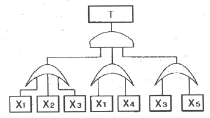
26. 설비보전에서 평균수리시간의 의미로 맞는 것은?
27. 통화이해도를 측정하는 지표로서, 각 옥타브(octave)대의 음성과 잡음의 데시벨(dB)값에 가중치를 곱하여 합계를 구하는 것을 무엇이라 하는가?
28. 일반적으로 보통 작업자의 정상적인 시선으로 가장 적합한 것은?
29. FT도에 사용되는 다음 기호의 명칭으로 옳은것은?
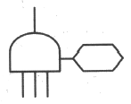
30. 일반적으로 위험(Risk)은 3가지 기본요소로 표현되며 3요소(Triplets)로 정의된다. 3요소에 해당되지 않는 것은?
31. 다음 FT도에서 최소 컷셋을 올바르게 구한것은?
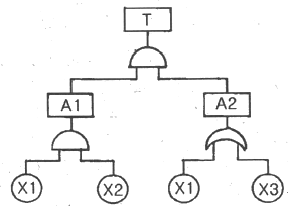
32. 시스템이 저장되어 이동되고 실행됨에 따라 발생하는 작동시스템의 기능이나 과업, 활동으로부터 발생되는 위험에 초점을 맞춘 위험분석 차트는?
33. 자동화시스템에서 인간의 기능으로 적절하지 않은 것은?
34. 의자 설계에 대한 조건 중 틀린 것은?
35. 시스템 분석 및 설계에 있어서 인간공학의 가치와 가장 거리가 먼 것은?
36. 산업안전보건법령상 유해ㆍ위험방지계획서 제출 대상 사업은 기계 및 가구를 제외한 금속가공제품 제조업으로서 전기 계약용량이 얼마 이상인 사업을 말하는가?
37. 건구온도 30℃, 습구온도 35℃ 일 때의 옥스포드(Oxford) 지수는 얼마인가?
38. 작업자가 용이하게 기계ㆍ기구를 식별하도록 암호화(Coding)를 한다. 암호화 방법이 아닌 것은?
39. 반사형 없이 모든 방향으로 빛을 발하는 점광원에서 5m 떨어진 곳의 조도가 120 lux 라면 2m 떨어진 곳의 조도는?
40. 육체작업의 생리학적 부하측정 척도가 아닌 것은 ?
3과목: 기계위험방지기술
41. 다음 중 드릴작업의 안전사항이 아닌 것은?
42. 슬라이드가 내려옴에 따라 손을 쳐내는 막대기 좌우로 왕복하면서 위험점으로부터 손을 보호하여 주는 프레스의 안전장치는?
43. 양중기(승강기를 제외한다.)를 사용하여 작업하는 운전자 또는 작업자가 보기 쉬운 곳에 해당 양중기에 대해 표시하여야 할 내용이 아닌 것은?
44. 연삭기의 연삭숫돌을 교체했을 경우 시운전은 최소 몇 분 이상 실시해야 하는가?
45. 크레인 로프에 2t의 중량을 걸어 20m/s2 가속도로 감아올릴 때 로프에 걸리는 총 하중은 약 몇 kN 인가?
46. 산업안전보건법령에서 정하는 간이리프트의 정의에 대한 설명 중 ( ) 안에 들어갈 말로 옳은 것은?(관련 규정 개정전 문제로 여기서는 기존 정답인 3번을 누르면 정답 처리됩니다. 자세한 내용은 해설을 참고하세요.)
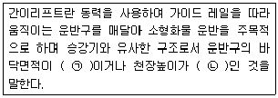
47. 다음 ( ) 안에 들어갈 용어로 알맞은 것은?
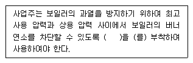
48. 다음 중 금속 등의 도체에 교류를 통한 코일을 접근시켰을 때, 결함이 존재하면 코일에 유기되는 전압이나 전류가 변하는 것을 이용한 검사방법은?
49. 산업안전보건법령에서 정하는 압력용기에서 안전인증된 파열판에는 안전인증 표시 외에 추가로 나타내어야 하는 사항이 아닌 것은?
50. 롤러기의 앞면 롤의 지름이 300 mm, 분당회전수가 30회일 경우 허용되는 급정지장치의 급정지거리는 약 몇 mm 이내이어야 하는가?
51. 단면적이 1800mm2인 알루미늄 봉의 파괴강도는 70 MPa이다. 안전율을 2로 하였을 때 봉에 가해질 수 있는 최대하중은 얼마인가?
52. 원동기, 풀리, 기어 등 근로자에게 위험을 미칠 우려가 있는 부위에 설치하는 위험방지 장치가 아닌 것은?
53. 아세틸렌 용접장치에서 사용하는 발생기실의 구조에 대한 요구사항으로 틀린 것은?
54. 롤러기의 급정지장치로 사용되는 정지봉 또는 로프의 설치에 관한 설명으로 틀린 것은?
55. 산업안전보건법령상 용접장치의 안전에 관한 준수사항 설명으로 옳은 것은?
56. 다음 중 프레스의 방호장치에 관한 설명으로 틀린 것은?
57. 다음 중 비파괴 시험의 종류에 해당하지 않는 것은?
58. 두께 2mm이고 치진폭이 2.5mm인 목재가공용 둥근톱에서 반발예방장치 분할날의 두께(t)로 적절한 것은?
59. 마찰 클러치가 부착된 프레스에 부적합한 방호장치는? (단, 방호장치는 한 가지 형식만 사용할 경우로 한정한다.)
60. 아세틸렌용접장치 및 가스집합용접장치에서 가스의 역류 및 역화를 방지하기 위한 안전기의 형식에 속하는 것은?
4과목: 전기위험방지기술
61. 정전기 발생에 영향을 주는 요인이 아닌 것은?
62. 입욕자에게 전기적 자극을 주기 위한 전기욕기의 전원장치에 내장되어 있는 전원 변압기의 2차측 전로의 사용전압은 몇 V 이하로 하여야 하는가?
63. 피뢰기의 설치장소가 아닌 것은? (단, 직접 접속하는 전선이 짧은 경우 및 피보호기기가 보호범위 내에 위치하는 경우가 아니다.)
64. 저압방폭구조 배선 중 노출 도전성 부분의 보호 접지선으로 알맞은 항목은?
65. 방폭전기설비의 용기내부에서 폭발성가스 또는 증기가 폭발하였을 때 용기가 그 압력에 견디고 접합면이나 개구부를 통해서 외부의 폭발성 가스나 증기에 인화되지 않도록 항 방폭구조는?
66. 전기시설의 직접 접촉에 의한 감전방지 방법으로 적절하지 않은 것은?
67. 누전화재가 발생하기 전에 나타나는 현상으로 거리가 가장 먼 것은?
68. 인체에 최소감지 전류에 대한 설명으로 알맞은 것은?
69. 그림에서 인체의 허용 접촉 전압은 약 몇 V 인가? (단, 심실세동 전류는
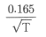
이며, 인체저항 Rk= 1000Ω, 발의 저항 Rf= 300Ω이고, 접촉 시간은 1초로 한다.)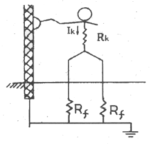
70. 교류아크 용접기에 전격 방지기를 설치하는 요령 중 틀린 것은?
71. 피뢰침의 제한전압이 800kV, 충격절연강도가 1000kV라 할 때, 보호여유도는 몇 % 인가?
72. 물질의 접촉과 분리에 따른 정전기 발생량의 정도를 나타낸 것으로 틀린 것은?
73. 감전 재해자가 발생하였을 때 취하여야 할 최우선 조치는? (단, 감전자가 질식상태라 가정함.)
74. 방폭지역 0종 장소로 결정해야 할 곳으로 틀린 것은?
75. 인체에 미치는 전격 재해의 위험을 결정하는 주된 인자 중 가장 거리가 먼 것은?
76. 방전의 분류에 속하지 않는 것은?
77. 정전용량 C=20 μF, 방전 시 전압 V=2kV 일 때 정전에너지는 몇 J 인가?
78. 접지 저항치를 결정하는 저항이 아닌 것은?
79. 작업장소 중 제전복을 착용하지 않아도 되는 장소는?
80. 방폭지역에서 저압케이블 공사 시 사용해서는 안 되는 케이블은?
5과목: 화학설비위험방지기술
81. 화재 감지에 있어서 열감지 방식 중 차동식에 해당하지 않는 것은?
82. 각 물질(A~D)의 폭발상한계와 하한계가 다음 [표]와 같을 때 다음 중 위험도가 가장 큰 물질은?
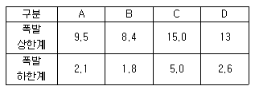
83. NH4NO3 의 가열, 분해로부터 생성되는 무색의 가스로 일명 웃음가스라고도 하는 것은?
84. 다음 중 분진 폭발의 특징으로 옳은 것은?
85. 자연 발화성을 가진 물질이 자연발열을 일으키는 원인으로 거리가 먼 것은?
86. 다음 중 누설 발화형 폭발재해의 예방 대책으로 가장 거리가 먼 것은?
87. 다음 중 최소발화에너지(E[J])를 구하는 식으로 옳은 것은? (단, I는 전류[A]. R 은 저항[Ω], V는 전압[V], C는 콘덴서용량[F], T는 시간[초]이라 한다.)
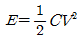
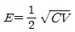
88. 다음 중 분진 폭발을 일으킬 위험이 가장 높은 물질은?
89. 사업주는 특수산화설비를 설치할 때 내부의 이상상태를 조기에 파악하기 위하여 필요한 계측장치를 설치하여야 한다. 다음 중 이에 해당하는 특수화학설비가 아닌 것은?
90. 가스 또는 분진 폭발 위험장소에 설치되는 건축물의 내화 구조로 설명한 것으로 틀린 것은?
91. 고압가스의 분류 중 압축가스에 해당되는 것은?
92. 건조설비를 사용하여 작업을 하는 경우에 폭발이나 화재를 예방하기 위하여 준수하여야 하는 사항으로 틀린 것은?
93. 트리에틸알루미늄에 화재가 발생하였을 때 다음 중 가장 적합한 소화약제는?
94. 액화 프로판 310kg 을 내용적 50L 용기에 충전할 때 필요한 소요 용기의 수는 몇 개인가? (단, 액화 프로판의 가스정수는 2.35 이다.)
95. 산업안전보건법령상 위험물질의 종류와 해당물질의 연결이 옳은 것은?
96. 다음 가스 중 가장 독성이 큰 것은?
97. 가연성 기체의 분출 화재 시 주 공급밸브를 닫아서 연료공급을 차단하여 소화하는 방법은?
98. 다음 중 산업안전보건법령상 물질안전보건자료의 작성ㆍ비치 제외 대상이 아닌 것은?
99. 다음 중 산업안전보건법령상 화학설비의 부속설비로만 이루어진 것은?
100. 증류탑에서 포종탑내에 설치되어 있는 포종의 주요 역할로 옳은 것은?
6과목: 건설안전기술
101. 작업발판 및 통로의 끝이나 개구부로서 근로자가 추락할 위험이 있는 장소에서 난간등의 설치가 매우 곤란하거나 작업의 필요상 임시로 난간등을 해체하여야 하는 경우에 설치하여야 하는 것은?(관련 규정 개정전 문제로 여기서는 기존 정답인 3번을 누르면 정답 처리됩니다. 자세한 내용은 해설을 참고하세요.)
102. 지반조사의 목적에 해당되지 않는 것은?
103. 풍화암의 굴착면 붕괴에 따른 재해를 예방하기 위한 굴착면의 적정한 기울기 기준은?(관련 규정 개정전 문제로 여기서는 기존 정답인 2번을 누르면 정답 처리됩니다. 자세한 내용은 해설을 참고하세요.)
104. 크레인 등 건설장비의 가공전선로 접근 시 안전대책으로 거리가 먼 것은?
1⑤. 다음 중 차량계 건설기계에 속하지 않는 것은?
106. 산업안전보건관리비 계상 및 사용기준에 따른 공사 종류별 계상기준으로 옳은 것은? (단, 철도ㆍ궤도신설공사이고, 대상액이 5억원 미만인 경우)
107. 건설공사 시공단계에 있어서 안전관리의 문제점에 해당되는 것은?
108. 유해위험방지 계획서를 제출하려고 할 때 그 첨부서류와 가장 거리가 먼 것은?
109. 흙막이 지보공을 설치하였을 때 정기적으로 점검하여 이상 발견 시 즉시 보수하여야 할 사항이 아닌 것은?
110. 크레인의 운전실 또는 운전대를 통하는 통로의 끝과 건설물 등의 벽체의 간격은 최대 얼마 이하로 하여야 하는가?
111. 달비계를 설치할 때 작업발판의 폭은 최소 얼마 이상으로 하여야 하는가?
112. 산소결핍이라 함은 공기 중 산소농도가 몇 퍼센트(%) 미만일 때를 의미하는가?
113. 크레인을 사용하여 작업을 할 때 작업시작 전에 점검하여야 하는 사항에 해당하지 않는 것은?
114. 흙막이 공법을 흙막이 지지방식에 의한 분류와 구조방식에 의한 분류로 나눌 때 다음 중 지지방식에 의한 분류에 해당하는 것은?
115. 그물코의 크기가 10cm 인 매듭없는 방망사신품의 인장강도는 최소 얼마 이상이어야 하는가?
116. 항타기 및 항발기에 관한 설명으로 옳지 않은 것은?
117. 굴착과 싣기를 동시에 할 수 있는 토공기계가 아닌 것은?
118. 다음은 강관을 사용하여 비계를 구성하는 경우에 대한 내용이다. 다음 ( )안에 들어갈 내용으로 옳은 것은?(관련 규정 개정전 문제로 여기서는 기존 정답인 3번을 누르면 정답 처리됩니다. 자세한 내용은 해설을 참고하세요.)
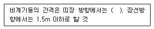
119. 콘크리트 타설 시 거푸집의 측압에 영향을 미치는 인자들에 관한 설명으로 옳지 않은 것은?
120. 흙의 투수계수에 영향을 주는 인자에 관한 설명으로 옳지 않은 것은?